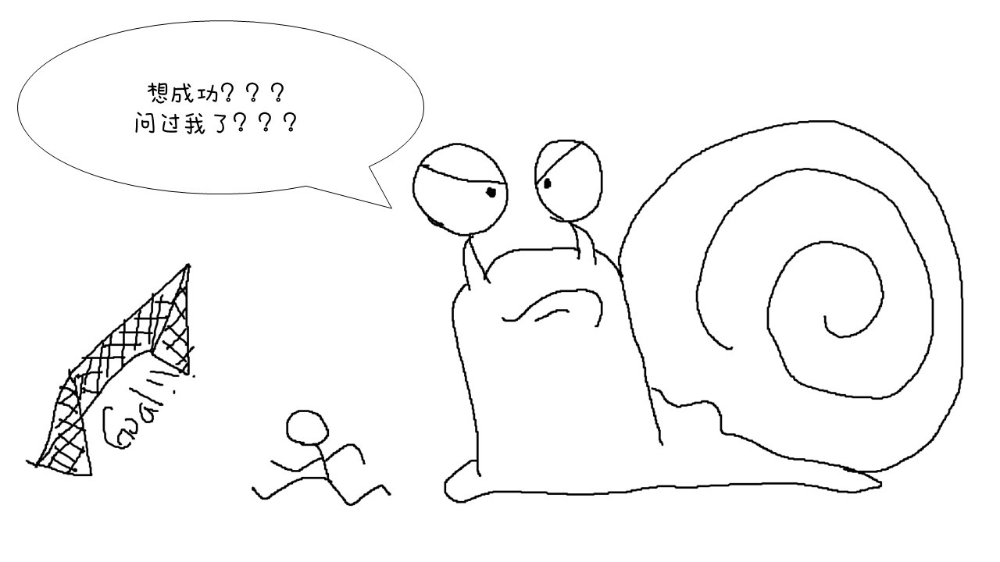
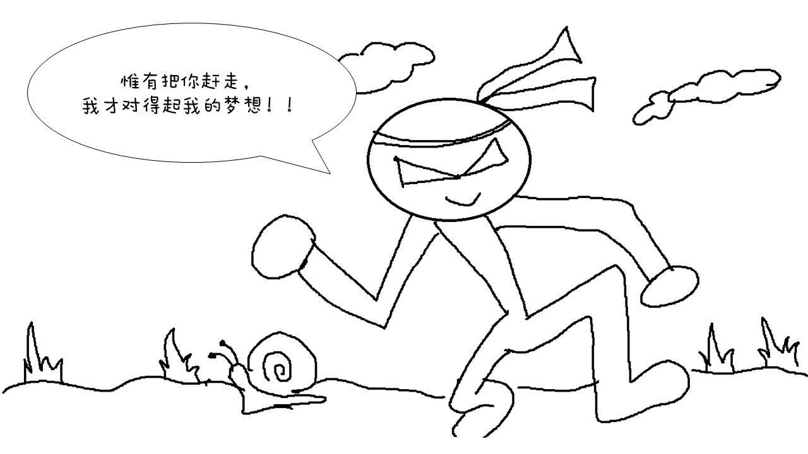

别让拖延成为您的梦想毒瘤
懒散与爱拖延为大多数人无法实现人生目标的致命因素。脑子里有许多想法想要实践，但‘拖延’总把我们伟大的想法停留在‘梦’与‘想’，剥夺执行的动力。
为了把各位‘梦想家’从爱拖延这毒瘤里拯救出来，我为辰格所编著的《戒了吧！拖延症》总结了‘拖延症’的主要病因与戒拖的方法，为各位在戒拖这场圣战埋下胜利的种子。
在治疗拖延症前，首先我们要了解是什么原因让我们无法摆脱拖延的魔掌。
1） 患者皆害怕失败。
他们拖延是因为宁可被认为‘不够时间投入’，也不愿被认为没有能力。他们也由于不够自信，常以疲劳、时间不足、状态不好等藉口来拖延进度，太过在意别人眼光而害怕失败；
2）患者同时患有完美主义与强迫倾向。
定下目标后，总要在自己‘准备得最充足’的状态后才开始。比如要出国找工作，要在自己的英文程度学得最好时才行动，结果拖延的是学习英语，因为完美主义而一事无成；
3）患者没有自我控制的能力，没有纪律。
他们不理解什么是‘千里之行，始于足下’。在日记里记录了很好的行动计划，却永远不迈出第一步去实践，而宁愿把时间花在看电视划手机；
4） 患者拟定的目标过于远大.
患者拟定的目标过于远大，实践路上荆棘满途，廖无乐趣，最终害怕面对行动起来去实践的困难而选择拖延。
与病魔缠斗是噩梦，但既然了解了病因，就应该对症下药。祛除绝症的方药并不复杂，但需要耐性与坚持。
看了编者书中给患者的建议，我把它们总结为：
1） 看清自己的目标是什么
人生短暂，你必须清楚现在在消耗着脑细胞‘梦想’着的目标，真的值得你消耗从血汗钱辛苦摄取回来的营养去交换？如果是，那你就勇敢地去；但如果不是，那你就要学学乔布斯，每天醒来后对着镜子问问自己，如果今天是你人生的最后一天，你还会做你现在在做着的事吗？
2） 学习自律
脑袋里一定要记住一句网路名言，‘人生最可怕的事，是比你牛的人还在努力！你现在在消耗的每一寸光阴，都是他拿来换取成功的本钱！’。清楚了目标，就开始‘活在当下’，做你当下最应该做的事。放工回家躺在沙发后，应该划手机八卦朋友的动态还是学英语提升沟通能力，哪个是你当下最应该做的事？
3） 清楚自己的时间花在哪里
如理财般管理时间，时间才会给予你相应的回报。每日定下合理的计划并把它们完成，即使是微小的进度，但至少又离梦想近了一点。
4） 没有自信的患者应该正面迎击困难，不逃避！
若因待办事无聊或艰难而选择逃避与拖延，问题终究无法解决。我很喜欢五月天‘咸鱼’里的一句歌词，‘咸鱼就算翻身，还是只咸鱼，至少到最后，我还有咸鱼不腐烂的自尊’，很老土但还是要说，失败了再重来。
5） 完美主义者要摒弃‘完美计划后再行动’的想法
计划一百次都是虚的，实实在在的行动一次才是最真实。不要当思想上的巨人，行动上的矮子，很多事情都是做了才有的！
咸鱼也要有梦，如果患者像我连咸鱼都不如，对茫茫人生路毫无头绪，那就随波逐流吧。想想自己无法满足父母的期望是多么的不肖、想想自己老了身无分文是多么的无助；甚至想想自己在同学会时受人白眼是多么的尴尬与难受，社会里每个人势利的眼神如利刃般穿透你弱小心灵是多么的痛，届时希望你能看清自己要的是什么。
网路上有很多很多的励志文，甚至连现代书局里的书架也是励志书泛滥。但若不知道自己要的是什么，不明嘹努力是为了什么，看再多的励志文也只是止痛剂，摆脱拖延、实实在在的行动才能更接近梦想。
如果您像我一样为‘拖延重症者’，建议您细读此书，绝对能从书里找到不一样的启发。